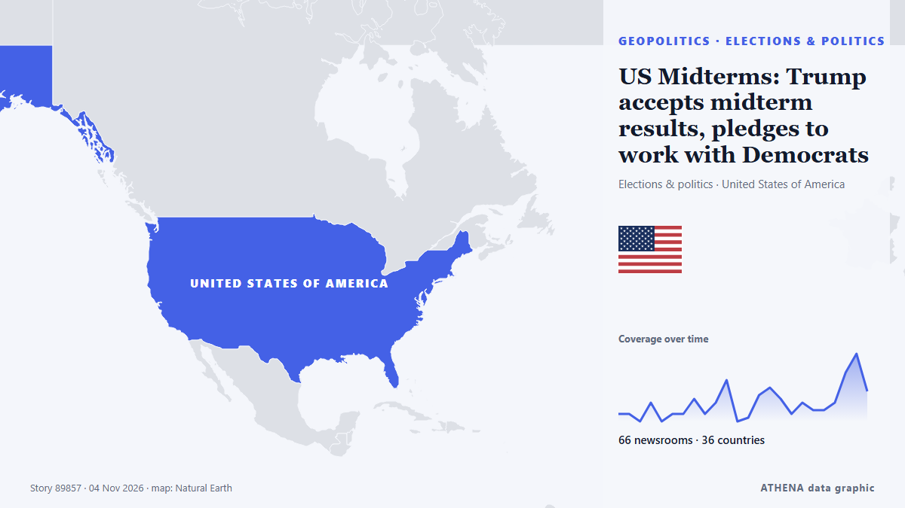

ATHENA Glaux Intelligences — Inteligencia informativa global — cada cifra explicada
Noticias del mundo, contrastadas entre países
ATHENA Glaux sigue cientos de medios de todo el mundo y agrupa sus informaciones en acontecimientos. De cada uno ve cuántos medios de cuántos países lo publicaron, quién fue el primero y una puntuación de riesgo con sus motivos — actualizado cada 10 minutos, en siete idiomas.
En directo de las noticiasUS Midterms: Trump accepts midterm results, pledges to work with Democrats66 medios · 36 países · Riesgo 3.8 · Fuentes: Al Jazeera English, The Straits Times

GeopolíticaUS Midterms: Trump accepts midterm results, pledges to work with Democrats
Democrats remain ahead in national polls as Trump and candidates make their final push in the days before polling day. de Al Jazeera English
Los titulares se muestran en inglés, tal como se publicaron.
LOCAL ELECTIONS 2026: LIVE | South Africa votes in the 2026 local government election
Special voting gets underway on Monday and will continue on Tuesday. de SABC News
US strikes Iran’s Qeshm island – Report
The US has not publicly announced the attacks, so as not to signal any intention of resuming major combat operations, the Wall Street Journal reported. de CNA (Channel NewsAsia)

Hoy en cifras
| 08:00 | 702 |
|---|---|
| 09:00 | 1722 |
| 10:00 | 778 |
| 11:00 | 897 |
| 12:00 | 768 |
| 13:00 | 704 |
| 14:00 | 1196 |
| 15:00 | 622 |
| 16:00 | 1129 |
| 17:00 | 599 |
| 18:00 | 670 |
| 19:00 | 600 |
| 20:00 | 431 |
| 21:00 | 457 |
| 22:00 | 312 |
| 23:00 | 659 |
| 00:00 | 429 |
| 01:00 | 420 |
| 02:00 | 308 |
| 03:00 | 501 |
| 04:00 | 427 |
| 05:00 | 386 |
| 06:00 | 552 |
| 07:00 | 763 |
Riesgo de los eventos de hoy
Trump says US ending $3.8 bn in annual aid for Israel
Says democrats, left-wing politicians using US financial support to Israel as a talking point to criticise Republicans. de Express Tribune
Democrats capture Congress in sweeping setback for Trump
Democrats captured majorities in both the Senate and House on Tuesday, scoring sweeping victories that reached deep into Republican strongholds as tens of millions of voters delivered a scathing… de The Korea Times
US delivery of 500 Patriot missiles to Ukraine will span 3 years starting in 2030
NATO Supreme Allied Commander Europe General Alexus Grynkewich said the United States continues to supply Ukraine with Patriot interceptor missiles, as well as weapons packages paid for by European… de Ukrinform (English)
Lo más cubierto
- Economía y mercados
Binance hackers used fake job interview in $6.3 bil. attack
53 países · 122 medios - Geopolítica
Israel's election commission says no fraud found in last week's vote
51 países · 135 medios
Señales emergentes
- Aumento repentino · Activa ahoraICJ
- Aumento repentino · Activa ahoraRepublican Party
- Aumento repentino · Activa ahoraJesus de Miguel
- Aumento repentino · Activa ahoraNorth Carolina
- Aumento repentino · Activa ahoraUS Congress
Alertas oficiales
- Red notification for tropical cyclone FOUR-26. Population affected by Category 1 (120 km/h) wind speeds or higher is 1.156 million .Red · GDACS ·
- Cyber chief: UK facing AI-powered attacks on critical infrastructure within two yearsadvisory · UK National Cyber Security Centre ·
- M 6.0 - 165 km NW of Port-Olry, VanuatuM6.0 · USGS ·
- M 6.2 - 43 km ESE of Port-Olry, VanuatuM6.2 · USGS ·
ATHENA en Telegram
Únase gratis al grupo ATHENA Glaux y reciba las noticias en cuanto se publican aquí:
- eventos de última hora con riesgo de 6 o más
- un resumen cada hora de los principales eventos
- actualizaciones de los seguimientos de riesgo
- el informe diario cada mañana a las 10:00 (hora de Atenas)
- una perspectiva semanal
- avisos oficiales, señales emergentes y riesgos al alza
Pulse el botón, se abre Telegram, pulse Unirse. Las publicaciones están en inglés; puede silenciar o salir cuando quiera. ¿Sin Telegram? Es gratis en telegram.org.
Seguimiento de riesgos
Más ›Riesgos globales — semana 45, 2026 (2–8 nov) ›
Geopolítica, política y seguridad
Más ›- Elecciones y política
Progressive Abdul El-Sayed wins Michigan Senate race to become first Muslim US senator
- Elecciones y política
Takeaways from the US midterm elections
- Elecciones y política
Democrat Amy Acton beats Republican Vivek Ramaswamy in Ohio governor’s race
- Elecciones y política
Lone Star turns blue: Democrats Talarico, Hinojosa topple Texas Republicans
Economía, finanzas y mercados
Más ›Gold firms on softer oil prices, US midterm results awaited
BENGALURU: Gold prices edged higher in early Asian trade on Wednesday as softer oil prices eased inflation concerns, while investors awaited US midterm election results and key labour market data for… de New Straits Times
- Vivienda e inmobiliario
David Jones failed to pay rent for Westfield stores, landlord says
- Empleo y salarios
Uber pays its drivers ‘wages’ and is liable for $81m payroll tax bill, Australia’s high court rules
- Acciones, bonos y mercados
Gold Falls 0.65% to US$3,922 as US Yields Rise | Gold & Silver, Nov 3
- Cripto y activos digitales
Binance hackers used fake job interview in $6.3 bil. attack
Comercio, industria e infraestructuras
Más ›Pakistan Lost $40 Billion Since Trade With India Was Halted: Report
Pakistan's pharmaceutical industry relied on raw materials available in India, he said, adding that its imports from the neighbouring country could generate annual savings of USD 2 billion to USD 3… de NDTV
- Industria manufacturera
BTS Jimin’s father to close his Busan cafe after years as beloved fan landmark
- Aviación, tren y carretera
Malaysia Airlines says customers may be affected by Amadeus breach
- Aviación, tren y carretera
Two Ryanair flights from Dublin searched after potential bomb threats
- Aviación, tren y carretera
Hoax bomb threats disrupt flights in Europe
Energía, recursos y medio ambiente
Más ›METLEN Signs Five-Year US LNG Supply Deal With Shell
Greek energy group METLEN has signed a binding five-year agreement with Shell Global LNG for six liquefied natural gas cargoes a year from 2027, turning an earlier memorandum into a firm supply… de Greek Reporter
- Petróleo y gas
Brent crude oil slips below $101 per barrel on ICE for first time since October 8
- Contaminación y biodiversidad
Mother and daughter dead in suspected grizzly bear attack near Bella Coola
- Petróleo y gas
New Jersey governor warns port operators against importing Russian diesel
- Clima y política climática
CMA CGM, Nike and Gemadept officially launch electric barge in Vietnam
Tecnología, IA y ciberseguridad
Más ›GCS Holdings welcomes Marvell's Lumentum deal, locks in 2027 InP supply
Marvell Technology and optical communications laser maker Lumentum announced on November 2 that they had signed a definitive agreement for Marvell to acquire Lumentum in an all-stock transaction. de DigiTimes Asia
- Inteligencia artificial
(LEAD) Lee orders review for establishment of cybersecurity task force
- Espacio y satélites
Nasa's Swift satellite telescope heads for fiery re-entry 22 years after launch
- Inteligencia artificial
Alibaba partners with Apple to integrate Qwen AI model into Apple Intelligence for Chinese market
- Ciberseguridad
Here's what to know about another cyberattack on European supermarket fridges
Empresas, compañías e inversión
Más ›Piraeus container throughput returns to growth in third quarter
Container throughput at Pier I of the Port of Piraeus returned to growth during the third quarter of 2026, despite remaining significantly lower across the first nine months of the year. de Container News
- Estrategia empresarial
Canva announces restructure as 22 per cent of workforce cut
- Estrategia empresarial
Libya's top religious authority rules against wearing Nike clothes
- Sectores y riesgos
Major automakers urge US Congress to pass permanent ban on Chinese vehicles
- Quiebras y reestructuraciones
Artists stage flash mobs at scenic spots in Dunhuang, NW China's Gansu
Salud, ciencia e investigación
Más ›Kansas sends Democrat to US Senate for first time since 1932
The result is a blow to Donald Trump, who carried Kansas by more than 10 points in each of his three presidential campaigns and travelled there last week. de Free Malaysia Today
- Espacio y física
NASA Telescope Set to Crash Back to Earth
- Avances
‘Mogging’ named Collins Dictionary’s Word of Year for 2026
- Sistemas de salud
Ethiopia attacks kill civilians as health system nears collapse, WHO chief says
- Avances
South Carolina elects Democratic senator for first time in almost three decades
Sociedad, derecho y políticas públicas
Más ›Indonesia arrests top officials over alleged wiretapping of president
Prabowo Subianto's newly appointed chief of staff was among those detained, adding to challenges facing the leader on multiple fronts. de Free Malaysia Today
- Accidentes y emergencias
Spanish transport minister resigns days after deadly train crash
- Accidentes y emergencias
1 Dead, 2 Injured After 2 Helicopters Collide On Mount Everest
- Accidentes y emergencias
Footballer dies after on-field collision
- Accidentes y emergencias
Two Australians among those dead in Spain's high-speed train crash
Deportes
Más ›PSG score four in 17 minutes to crush Villarreal 6-0
VILLARREAL: Reigning champions Paris Saint-Germain scored four times in the first 17 minutes on their way to a 6-0 demolition of Villarreal in Spain in the Champions League on Tuesday, as the French… de New Straits Times
Cultura, personas y estilo de vida
Más ›Aaron-Roy King, Pang Ron-Pei Jing fall in Hylo Open semi-finals
KUALA LUMPUR: Malaysia's impressive run of winning at least one title at each of the previous three stops of the European swing came to an end after Aaron Tai-Yap Roy King and Hoo Pang Ron-Lai Pei… de New Straits Times
- Cine y televisión
‘The Remarried Empress’ Gets Surprise Early Premiere On Disney+/Hulu
- Arte, libros y patrimonio
National Galleries of Scotland to loan 60 artworks to China for major exhibition
- Realeza y personajes
King Charles calls slavery 'monstrous injustice' as PM mulls apology
- Música
My Chemical Romance Leads ‘Parade’ of Reissues Marching Onto Billboard 200 Albums Chart